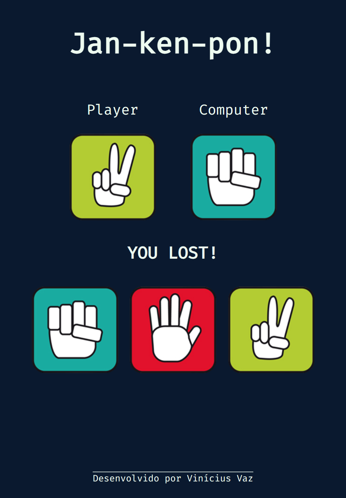

<h1>This is a rock-paper-scissors game by Ania Kubów</h1>

It's the first functionalgame that I'll be learning for the next few days a total of seven games will be taught in this course.
<a>https://viniciusagvaz.github.io/game-jankenpo/</a>
<hr>

<div>
   
   
   
   
</div>

<div>
<h3>JavaScript Properties and Methods cover:</h3>
<ul>
  <li>.querySelectorAll()
  <li>.querySelector()
  <li>.forEach()
  <li>.addEventListener()
  <li>.innerHTML
  <li>e.target.id
  <li>.Math.floor()
  <li>.Math.random()
</ul>
</div>
<h4>The seven games will be listed at their difficult levels wich will be:</h4>
<ol>
  <li>Rock Paper Scissors
  <li>Memory Game
  <li>Whac-a-mole
  <li>Breakout
  <li>Frogger
  <li>Connect Four
  <li>Space Invaders
</ol>

<div>
<hr>
<div align= "center">
Check out her repositories at her GitHub page and the course itself:


<a>https://github.com/kubowania</a>

<a>https://www.youtube.com/watch?v=ec8vSKJuZTk</a>
</div>
